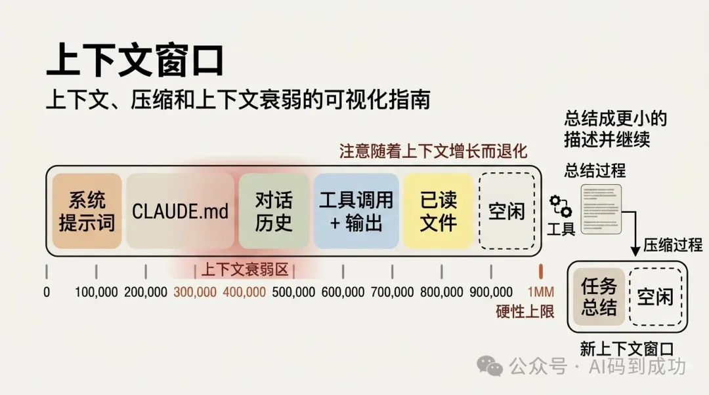
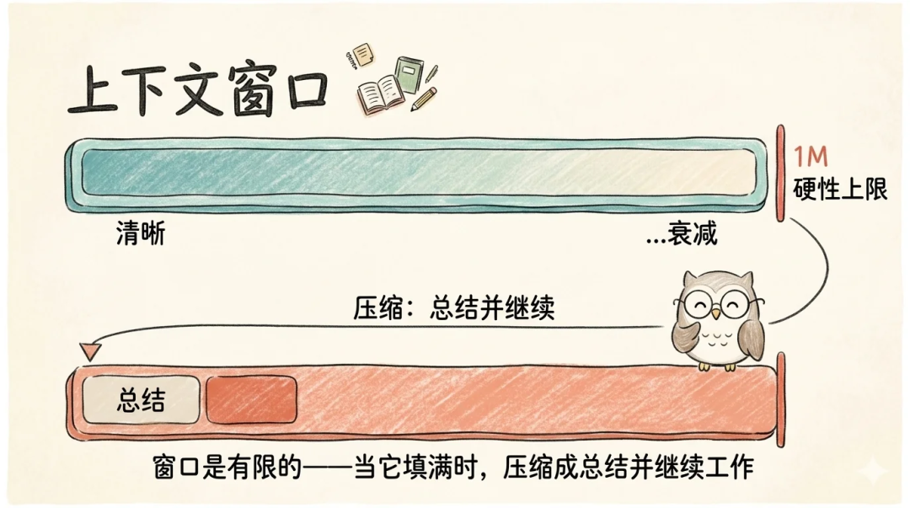
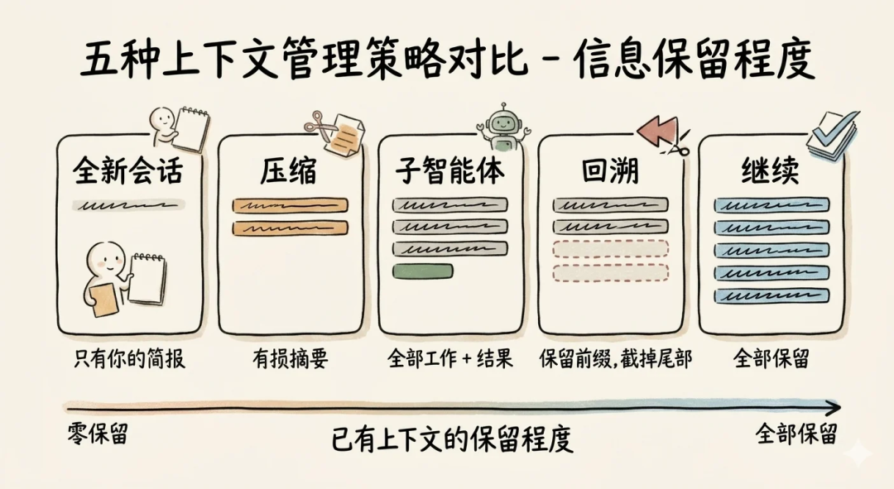
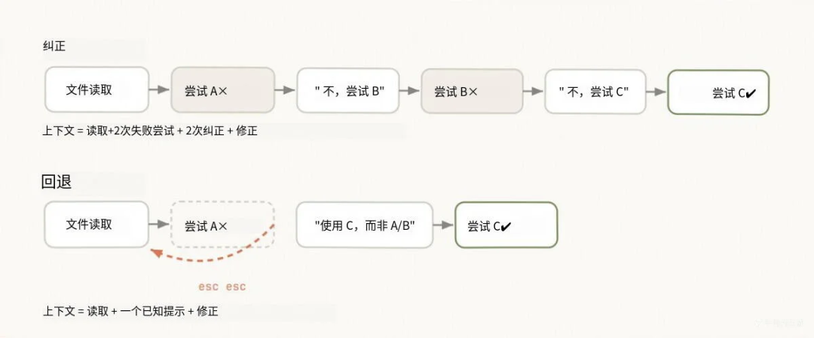
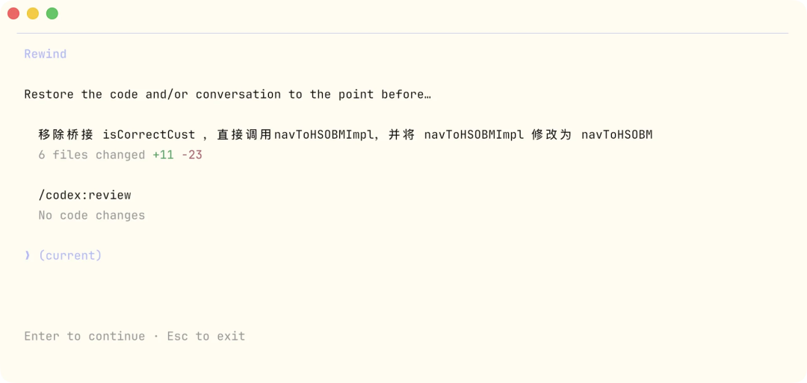
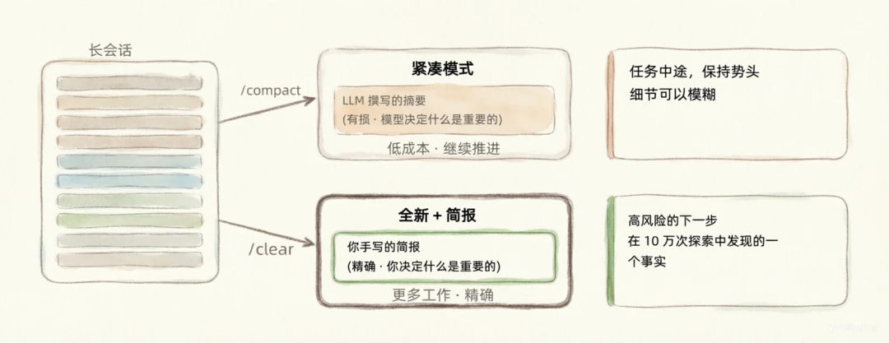
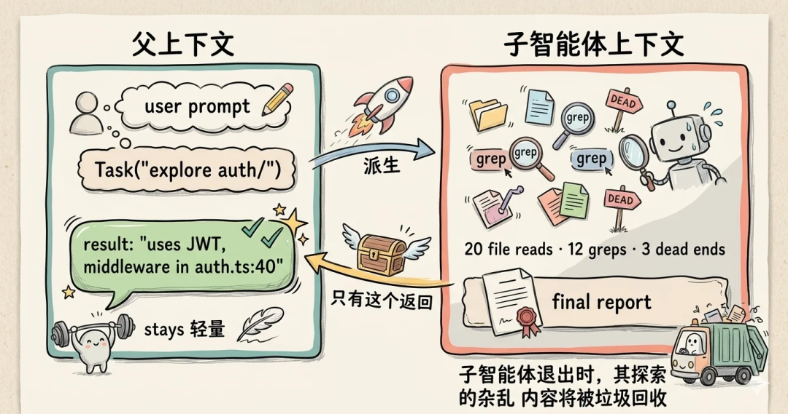
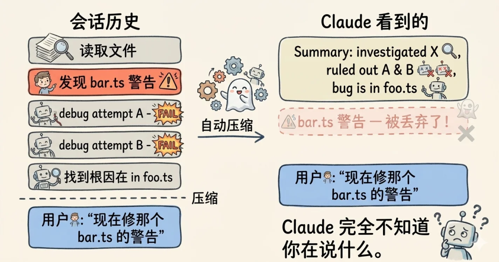
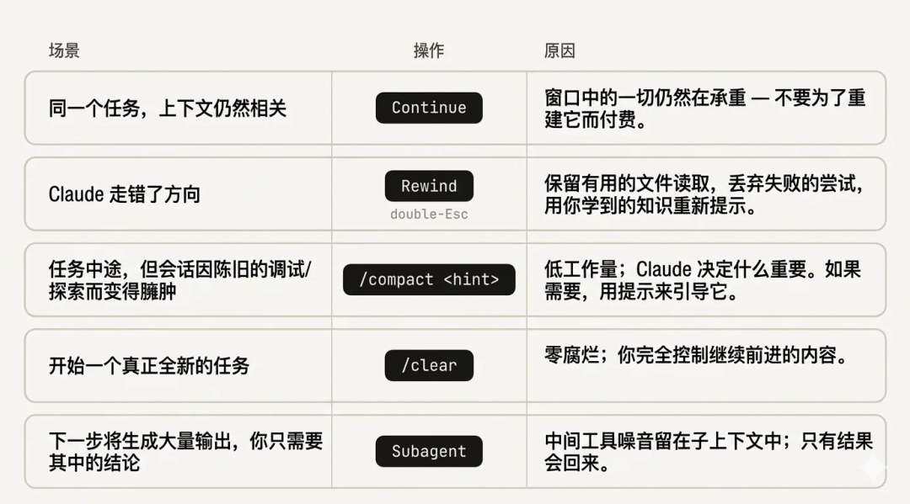

1M token 把上限抬高了，但真正决定体验的，不是你能装下多少内容，而是你怎么管理这些内容。
今天 Claude Code 在 /usage 上做了新更新，目的是让大家更清楚地看到自己的用量情况。这个更新不是拍脑袋来的，而是来自大量真实用户访谈。
这些访谈里有个反复出现的现象：
同样都在用 Claude Code，同样都是 1M 上下文，不同人的体验差异非常大。
有人一条会话从早跑到晚，越跑越顺。
有人每次只做小步快跑，也很稳。
也有人明明模型很强，却经常“越聊越乱”：
• 任务做到一半方向跑偏 • 关键信息被淹没 • 明明刚讨论过的结论，后面又被忽略 • compact 后感觉“记忆断层”
这背后不是玄学，核心就是一件事：上下文管理能力。
为什么 1M 上下文反而更容易把人带进坑里
很多人看到 1M token 的第一反应是： “太好了，以后不用那么在意上下文了。”
真实情况刚好相反。上下文越大，你越需要管理策略。
因为你手里突然多了很多选择：
• 一直继续当前会话 • 回退重试 • 清空重开 • 压缩历史 • 拆给 subagent
看起来只是“多了几个命令”，本质上是每一轮都要做一次路由决策。
会用的人，把这些命令当方向盘。
不会用的人，把这些命令当“救火按钮”。
快速讲清 3 个概念：上下文、压缩、上下文衰减

1) 上下文窗口到底是什么
上下文窗口，就是模型在生成下一条回复时能“看到”的全部输入。通常包含：
• system prompt • 当前会话历史 • 工具调用记录与输出 • 已读取文件内容 • 你刚刚输入的新指令
Claude Code 现在有 1M token 上下文，意味着你可以在一个会话里处理更长、更复杂的任务链。
2) 上下文压缩（Compaction）是什么
上下文窗口有上限，不可能无限增长。
会话变长后，需要把历史浓缩成更短摘要，再在摘要基础上继续。这就是 compaction。
你可以手动触发，也可能在长会话里自动触发。
压缩的好处是省空间、保连续性。代价是它天然“有损”。
3) 上下文衰减（Context Rot）是什么
上下文衰减可以理解成：
上下文越长，注意力越分散；旧信息越多，干扰越大；模型对当前目标的聚焦能力会下滑。
它不是“突然失忆”，更像“工作台太乱导致效率下降”。
所以 1M 不是“无脑塞满”，而是“给你更多管理余地”。

每一个回合结束后，都是分支点
Claude 完成一个回合后，你并不只有“继续聊下去”这一条路。
你手里其实有 5 种动作：
• Continue：继续当前会话• /rewind：跳回某个历史节点，从那里重试• /clear：开新会话，用精炼 brief 重启• /compact：把长历史压缩成摘要后继续• Subagent：把一段工作委托给独立上下文，只回收结论
很多问题都不是出在“这一条 prompt 写得不够好”，而是你在分支点选错了动作。

习惯 1：新任务就新会话，不要在旧线程里硬拐弯
一个很实用的规则：任务目标变了，就开新会话。
比如你刚完成 auth 改造，下一步要写发布文档。
这两件事相关，但目标完全不同：
• 前者是“改代码并验证” • 后者是“提炼信息并表达”
如果你在同一会话里硬接，旧链路会持续施加惯性。
看起来省了一步，实际上经常更慢、更贵。
可执行做法：
/clear
任务：为 auth 改造写发布说明
背景：已完成 token 刷新与中间件重构
关键文件：src/middleware/auth.ts, docs/auth.md
限制：不改业务代码，只输出文档草稿你会发现，新的会话往往更干净，指令执行更直接。
习惯 2：纠错优先用 Rewind，不在错误路径上打补丁

很多人遇到失败路径会这样改：
“这个不行，换 X 试试。”
问题是，这句话会把失败路径的噪音也一起继承。
模型在“错误分支”上继续补丁，结果容易越改越乱。
更稳的动作是 rewind 到分支前，再重新发指令。
典型场景：
• Claude 读了 5 个文件 • 走了方案 A • 方案 A 失败
建议这样做：
/rewind
# 回到读完关键文件之后
不要使用方案 A（foo 模块没有暴露对应接口）
直接走方案 B，并补上单测与回归检查Rewind 的价值不是撤销面子，而是清理路径依赖。
这是上下文管理里最能立竿见影的习惯。

习惯 3：把 Compact 当主动策略，不要等“快爆窗”才做
很多 bad compact 都出在触发时机太晚：
• 会话已经很长 • 主题已经漂移 • 噪音远多于重点
你在这个时间点压缩，模型很难准确猜到你下一步真正要干什么。
更好的方式是主动 compact，而且给压缩“聚焦指令”。
/compact focus on:
1. auth 重构最终方案与约束
2. 已排除路径及失败原因
3. 仅保留与 bar.ts warning 相关上下文
4. 丢弃测试调参细节日志这样 compact 就不只是“缩短文本”，而是在做“上下文治理”。
习惯 4：搞清 /compact 和 /clear 的分工

两者都能减轻上下文负担，但逻辑不同：
/compact：
让模型总结历史，再继续。
省力，但你把“保留什么”的决定权交给了模型。
/clear：
你自己写 handoff，再干净重启。
费点力，但控制权在你手里。
什么时候选哪个？
• 任务持续、方向一致：优先 /compact• 目标切换、边界变化：优先 /clear• 信息敏感、要求高可控：优先 /clear• 节奏快、先求推进：可先 /compact
一句话记忆：
compact 是模型主导的压缩，clear 是你主导的重构。
习惯 5：把 Subagent 当“上下文隔离器”，不只是并行器

很多人只把 subagent 理解成“多开一个工人”。
真正高价值的点是：隔离中间噪音。
当你预判某块工作会产生大量中间输出，而且后续只需要结论，就该拆出去。
高频适用场景：
• 让 subagent 读另一个代码库并总结 auth flow • 让 subagent 对照 spec 做验收检查 • 让 subagent 根据 git 改动生成文档初稿 • 让 subagent 跑测试并归类失败项
判断题只有一条：
我之后要的是“全过程”，还是“最终结论”？
只要结论，就拆。
主线程越干净，后续决策越稳。
为什么会出现 Bad Compact（糟糕压缩）

长会话里常见的翻车模式是：
• 你前面花很久在 debug • autocompact 在这个阶段触发 • 你下一条突然切到另一个目标
比如你说：“现在去修 bar.ts 的另一个 warning。”
但压缩摘要里可能没保留它，因为模型判断它“和主线不够相关”。
更麻烦的是，压缩往往发生在上下文最重的时候。
也就是上下文衰减最明显的时候。
这时模型的判断质量天然更脆弱。
避免 bad compact 的三条实战建议：
• 提前主动 compact，不要等被动触发 • 每次 compact 都写 focus，告诉它下一步要去哪 • 方向变化明显时直接 clear，不赌压缩质量
一张可直接复用的分支决策表
